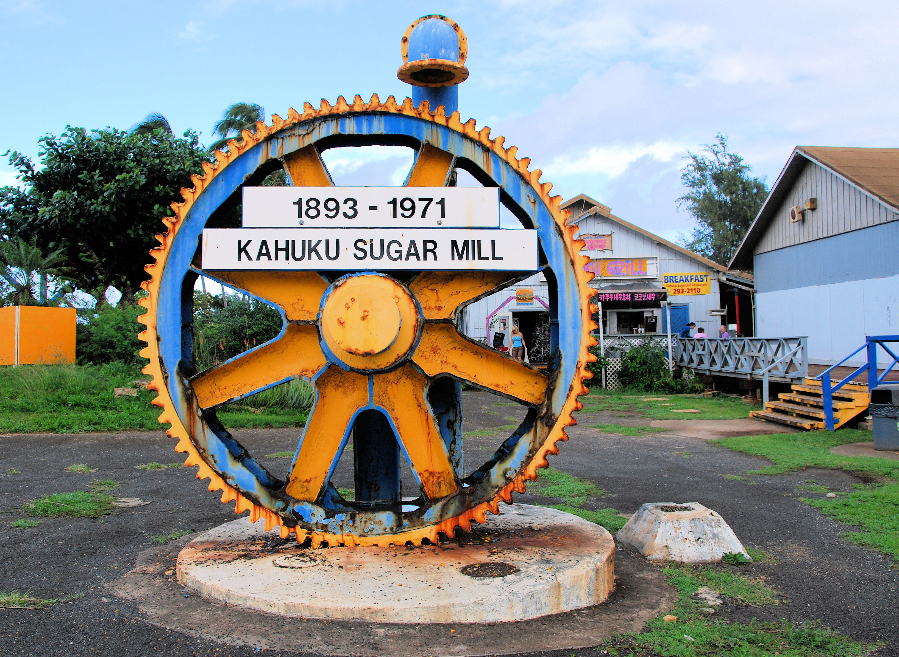
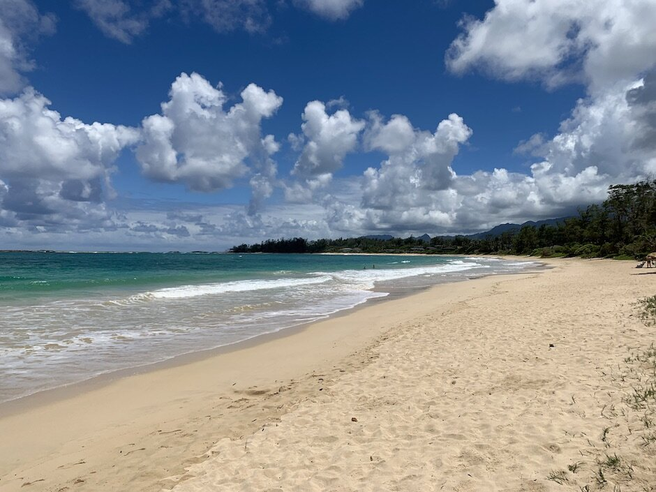
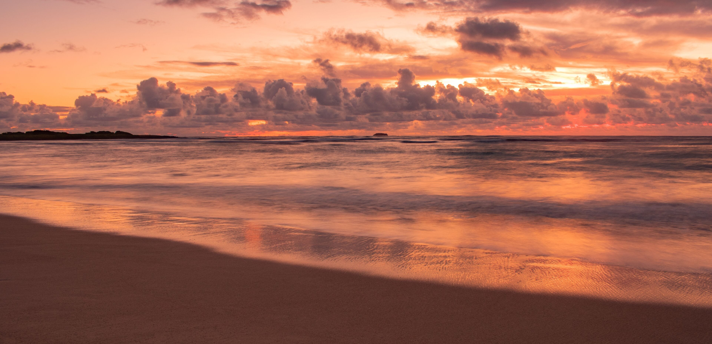
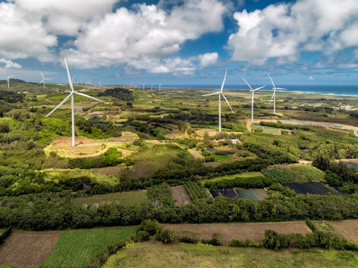

Home
Attractions
Welcome to Kahuku, Hawaii
Kahuku, Hawaii is a small coastal town on the northeastern tip of the island of Oʻahu, along the famous North
Shore. It’s known for its laid back rural vibe, beautiful beaches, shrimp trucks, and strong local community.
Why choose Kahuku?
Kahuku is a lovely island that is filled with joy, love, and fun. It is also located in Hawaii like come on
who wouldn’t want to live in Hawaii or even visit. It is very culturally diverse and traditional. It also has
that
island vibe with beautiful beaches and family loving people and everyone there will be very accepting of you.
Kahuku is perfect if you want a slower, authentic North Shore lifestyle with beautiful beaches, open farmland,
and
fewer crowds than Honolulu. It’s known for its tight-knit community, legendary shrimp trucks, and easy access to
some of Oʻahu’s best ocean views and surf spots.



Fun Facts about Kahuku, Hawaii
🏈 Football powerhouse: Kahuku High & Intermediate School is famous for producing NFL players and winning
multiple Hawaii state championships.
🍤 Shrimp truck capital: Kahuku is known statewide for its garlic shrimp trucks, attracting visitors from all
over Oʻahu.
🌊 Northernmost point of Oʻahu: Kahuku sits near Kahuku Point, one of the island’s farthest northern tips.
🌱 Agricultural roots: The area was once home to large sugar plantations and remains known for farming and fresh
local produce.
🏝️ Laid-back North Shore vibe: Despite being a small town, it’s close to world-famous surf breaks along Oʻahu’s
North Shore.



Facts About Kahuku
📍 North Shore, Oʻahu
🌊 Coastal town
👥 ~2,800 residents
🏈 Strong football culture
🌾 Historic sugar plantation
🤙 Shaka sign origins
🌬 Wind farm energy
🎬 Filming location
🏖 Beaches & surfing